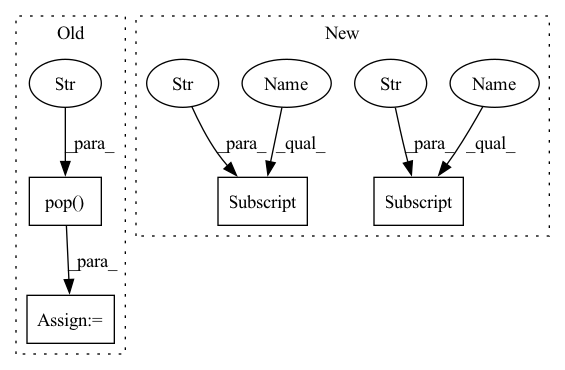

Pattern ID :34103
Before Change
kwargs["image_size"] = image_size
self.fpn_channels = fpn_channels
self.image_size = image_size
fpn_norm_layer = kwargs.pop("fpn_norm_layer" , nn.BatchNorm2d)
// create modules
if pretrained_backbone:
backbone_norm_layer = FrozenBatchNorm2d
else:After Change
class EfficientNetBackBoneWithBiFPN(nn.Sequential):
def __init__(self, config):
backbone_name = config["backbone_name"]
pretrained_backbone = config["pretrained_backbone"]
backbone_norm_layer = config["backbone_norm_layer"]
image_size = config["image_size"]
backbone_freeze = config["backbone_freeze"]
// -------------------------
fpn_norm_layer = config["other_norm_layer"]
fpn_channels = config["fpn_channels"]
fpn_num_repeat = config["fpn_num_repeat"]
// create modules
backbone = _efficientnet(backbone_name, pretrained_backbone,In pattern: SUPERPATTERN
Frequency: 4
Non-data size: 4
Instances Fragment ID: 97458895
Project Name: jintao-huang/efficientdet_pytorch
Commit Name: 63fbf56348d5f299bf5757f5c4b0fa68a0a7adca
Time: 2020-05-24
Author: hjt_study@qq.com
File Name: models/backbone.py
M Class Name: EfficientNetBackBoneWithBiFPN
N Class Name: EfficientNetBackBoneWithBiFPN
M Method Name: __init__(2)
N Method Name: __init__(6)
M Parent Class: nn.Sequential
N Parent Class: nn.Sequential
M File Name: models/backbone.py
N File Name: models/backbone.py
M Start Line: 24
M End Line: 34
N Start Line: 24
N End Line: 45
Before Change
del out_dict["macro avg"]
del out_dict["weighted avg"]
accuracy = out_dict.pop("accuracy" )
out_dict = {
tag: {
metric.replace("support", "number").replace("f1-score", "f1"): metric_value
for metric, metric_value in tag_scores.items()After Change
)
)
prfs = precision_recall_fscore_support(
list(filter(lambda tag: tag != "O", chain.from_iterable(data["y_true"] ))),
list(filter(lambda tag: tag != "O", chain.from_iterable(data["y_pred"] ))),
average="micro",
)
Fragment ID: 97458879
Project Name: clarin-pl/embeddings
Commit Name: e631c8cb3d1d378eb76398e6f8db803f0e2a941d
Time: 2021-12-21
Author: 34009816+asawczyn@users.noreply.github.com
File Name: tests/test_sequence_labelling_evaluator.py
M Class Name: AnonimousClass
N Class Name: AnonimousClass
M Method Name: sklearn_metrics(1)
N Method Name: sklearn_metrics(1)
M Parent Class:
N Parent Class:
M File Name: tests/test_sequence_labelling_evaluator.py
N File Name: tests/test_sequence_labelling_evaluator.py
M Start Line: 58
M End Line: 75
N Start Line: 58
N End Line: 78
Before Change
component_type = StackComponentType(component_type)
component_name = component_config.pop("name")
component_flavor = component_config.pop("flavor")
component_id = component_config.pop("id" )
component_shared = component_config.pop("is_shared")
// make sure component can be registered, otherwise ask for new name
client = Client()After Change
The ID of the imported component.
name = component_dict["name"]
flavor = component_dict["flavor"]
config = component_dict["configuration"]
// make sure component can be registered, otherwise ask for new name
client = Client()
Fragment ID: 97458894
Project Name: maiot-io/zenml
Commit Name: 9fcb2ae4fca0414e82f951d83c9e7e22f016eb39
Time: 2022-11-29
Author: schustmi@users.noreply.github.com
File Name: src/zenml/cli/stack.py
M Class Name: AnonimousClass
N Class Name: AnonimousClass
M Method Name: _import_stack_component(2)
N Method Name: _import_stack_component(2)
M Parent Class:
N Parent Class:
M File Name: src/zenml/cli/stack.py
N File Name: src/zenml/cli/stack.py
M Start Line: 829
M End Line: 881
N Start Line: 829
N End Line: 861
Before Change
kwargs["image_size"] = image_size
self.fpn_channels = fpn_channels
self.image_size = image_size
fpn_norm_layer = kwargs.pop("fpn_norm_layer" , nn.BatchNorm2d)
// create modules
if pretrained_backbone:
backbone_norm_layer = FrozenBatchNorm2d
else:After Change
class EfficientNetBackBoneWithBiFPN(nn.Sequential):
def __init__(self, config):
backbone_name = config["backbone_name"]
pretrained_backbone = config["pretrained_backbone"]
backbone_norm_layer = config["backbone_norm_layer"]
image_size = config["image_size"]
backbone_freeze = config["backbone_freeze"]
// -------------------------
fpn_norm_layer = config["other_norm_layer"] Fragment ID: 97458893
Project Name: jintao-huang/efficientdet_pytorch
Commit Name: 63fbf56348d5f299bf5757f5c4b0fa68a0a7adca
Time: 2020-05-24
Author: hjt_study@qq.com
File Name: models/backbone.py
M Class Name: EfficientNetBackBoneWithBiFPN
N Class Name: EfficientNetBackBoneWithBiFPN
M Method Name: __init__(2)
N Method Name: __init__(6)
M Parent Class: nn.Sequential
N Parent Class: nn.Sequential
M File Name: models/backbone.py
N File Name: models/backbone.py
M Start Line: 24
M End Line: 34
N Start Line: 24
N End Line: 45
Before Change
from .sd_pipeline import StableDiffusionInpaintPipeline
model_kwargs = {}
sd_disable_nsfw = kwargs.pop("sd_disable_nsfw" , False)
if sd_disable_nsfw:
logger.info("Disable Stable Diffusion Model NSFW checker")
model_kwargs.update(dict(
feature_extractor=DummyFeatureExtractor(),After Change
from .sd_pipeline import StableDiffusionInpaintPipeline
model_kwargs = {}
if kwargs["sd_disable_nsfw"] :
logger.info("Disable Stable Diffusion Model NSFW checker")
model_kwargs.update(dict(
feature_extractor=DummyFeatureExtractor(),
safety_checker=DummySafetyChecker(),
))
self.model = StableDiffusionInpaintPipeline.from_pretrained(
self.model_id_or_path,
revision="fp16" if torch.cuda.is_available() else "main",
torch_dtype=torch.float16 if torch.cuda.is_available() else torch.float32,
use_auth_token=kwargs["hf_access_token"],
**model_kwargs
)
// https://huggingface.co/docs/diffusers/v0.3.0/en/api/pipelines/stable_diffusion//diffusers.StableDiffusionInpaintPipeline.enable_attention_slicing
self.model.enable_attention_slicing()
self.model = self.model.to(device)
if kwargs["sd_cpu_textencoder"] :
logger.info("Run Stable Diffusion TextEncoder on CPU")
self.model.text_encoder = self.model.text_encoder.to(torch.device("cpu"))
Fragment ID: 97458891
Project Name: sanster/lama-cleaner
Commit Name: ec7b2d8e2d7a6c764bed927269639830fc3292c6
Time: 2022-09-28
Author: cwq1913@gmail.com
File Name: lama_cleaner/model/sd.py
M Class Name: SD
N Class Name: SD
M Method Name: init_model(2)
N Method Name: init_model(2)
M Parent Class: InpaintModel
N Parent Class: InpaintModel
M File Name: lama_cleaner/model/sd.py
N File Name: lama_cleaner/model/sd.py
M Start Line: 74
M End Line: 75
N Start Line: 74
N End Line: 96